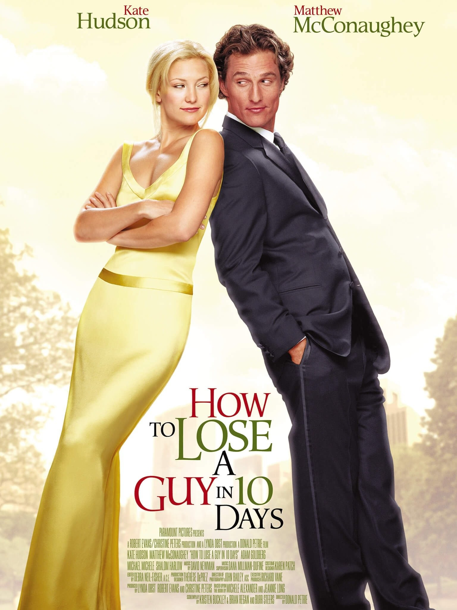
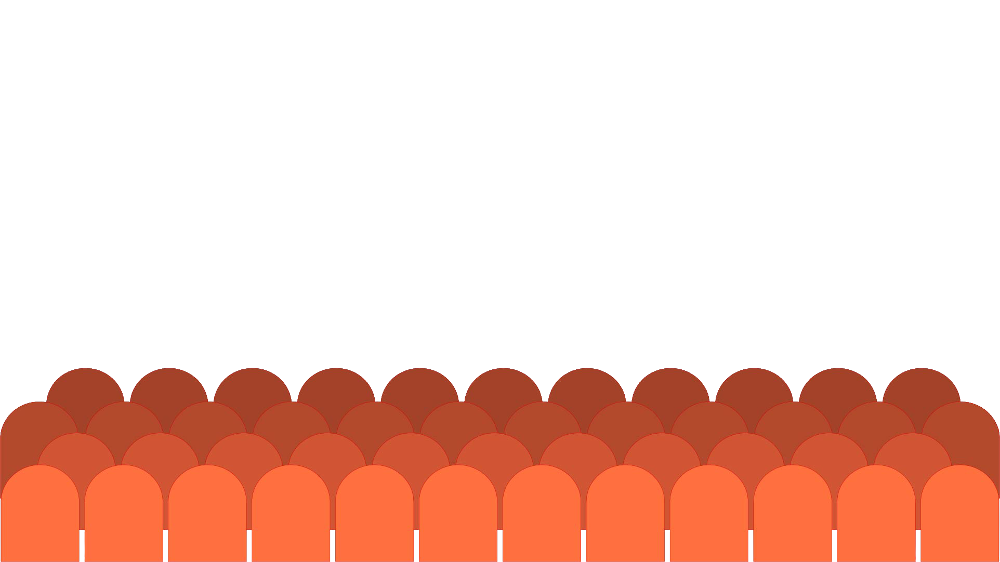

HOW TO LOSE A GUY IN 10 DAYS
Een grappige romantische komedie over een vrouw die probeert een man binnen tien dagen van haar af te laten knappen, terwijl hij juist heeft gezworen haar verliefd op hem te laten worden.
Mijn mening: Ik vind deze film erg grappig en leuk om te kijken. De situaties en de chemie tussen de personages maken hem extra leuk.
